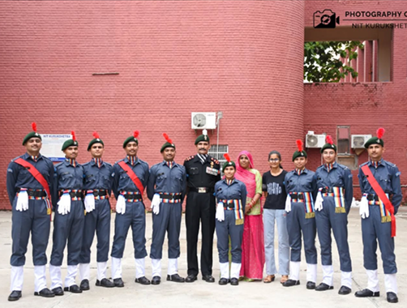
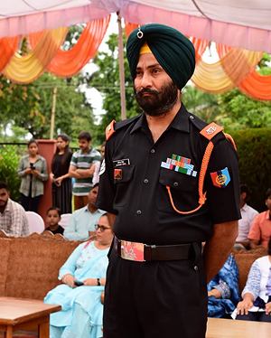

National Cadet Corps (NCC)

The NCC is a vibrant youth organization, which has made a commendable contribution in producing responsible and patriotic citizens. From a small beginning, today it has grown to the largest youth organization. NCC motivates and trains upcoming generations to render their meaningful contribution towards national integration and development.
Trains cadets in military drills, weapons handling, map reading, survival skills, leadership, and discipline.
NCC Navy Wing trains cadets in naval skills, discipline, leadership, seamanship, sailing, and watermanship.
Provides training in aviation, aero-modeling, drill, leadership, discipline, and flying basics.

